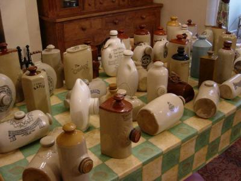

Purpose:
This web-site shows all of my collection of Victorian hot water bottles and muff warmers. I have been collecting these items since 2001. If you recognise any of the items in the collection, I would be delighted to hear from you with any details, e.g. date of manufacture, place of manufacture etc.
History:
About four years ago I walked into a Restaurant called "The Huntsman" in Dinas Powys near Cardiff in South Wales. This is a great restaurant with the added extra of being run by a hot water bottle fanatic. The restaurant is in a small barn conversion with exposed beams running overhead. Every single square inch of beam is covered in ceramic hot water bottles, foot warmers and muff warmers. Muff warmers are small hand-held ceramic hot water bottles that are mostly 18th Century as they date to the time ladies used fur muffs, cloaks and carriages. About six months later my Mother went to the same restaurant (The owner was selling off lesser bottles from his collection) and bought me my first hot water bottle as a Christmas present and since then I have been tragically addicted to the accumulation of hot water bottles.
The Huntsman represents the best collection I have seen although apparently there is a three hundred bottle collection in North London.
I buy quite a few items from E-bay on the Internet using the ID SPPOTS and it appears that there are a few equally tragic collectors out there (YOU KNOW WHO YOU ARE). In the unlikely event you enjoy the site and you have an item I am interested in then please, please, please e-mail. (sppots11@aol.com)